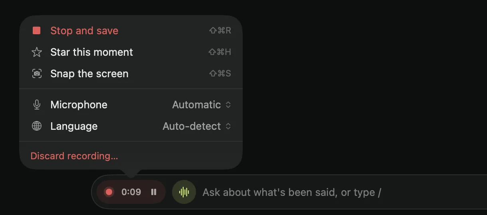
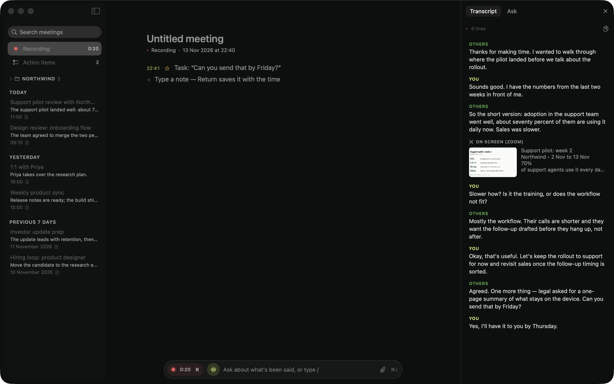
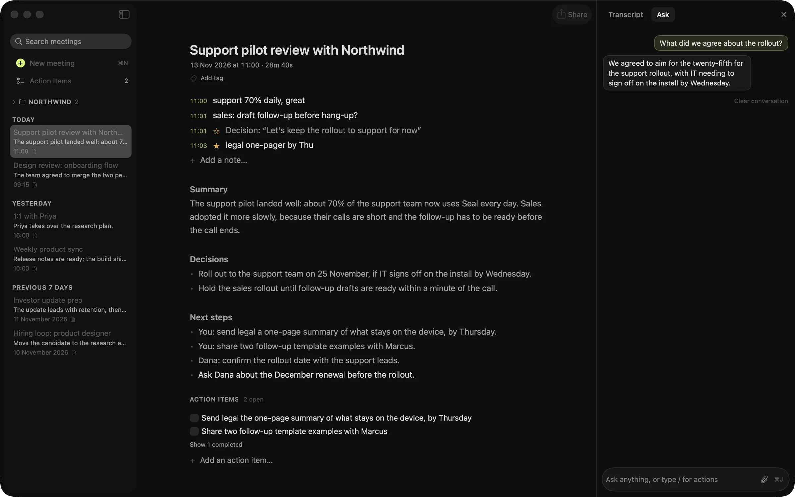
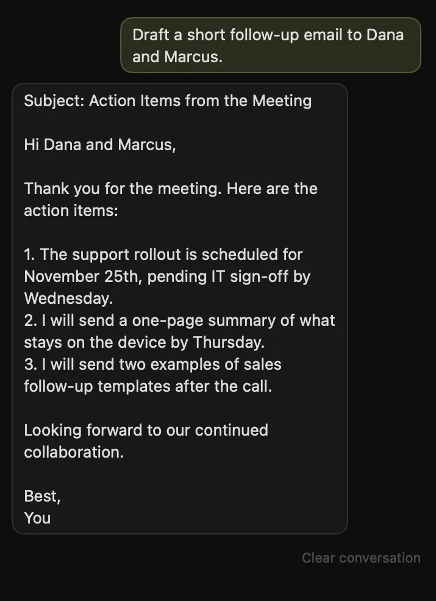
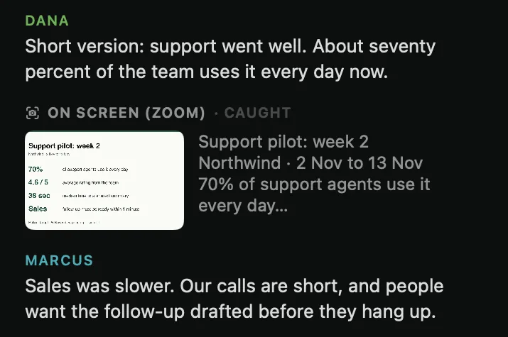

Seal hears both sides of the call, writes the notes and answers your questions, all on your Mac. No bot joins the call. Nothing goes to a cloud. There's no account.
macOS 14 or later · Apple silicon · 0 bytes of your meetings sent
You · microphoneThe call · system audio
Written on this Mac in secondssent out · 0 B
0 bytesof audio, transcript or notes ever leave your Mac.
No accountNothing to sign up for, nothing to sign in to.
Works offlineTurn Wi-Fi off mid-call and it keeps going.
Open to checkThe source is public, so the claim can be verified.
One meeting, start to finish
From the first word to sealed notes
01 · Before
It notices the call
When Zoom, Meet or Teams turns on your microphone, Seal offers to record. A small tab waits at the edge of your screen with pause, stop and a star for the moment that matters.
ZoomGoogle MeetTeamsAny app with audio

02 · During
It hears both sides, live
Your microphone and the call's audio are transcribed as people speak, on your Mac. When someone shares a slide, Seal reads it and keeps it beside the transcript.
EnglishUkrainianMixed conversations

03 · During
Ask it what was agreed
Missed something? Ask during the call or after it: what was decided, who owns what, what they just said. The answer comes from the conversation itself, in seconds, without leaving the Mac.

04 · After
It's sealed when you stop
Press Stop and the notes are written: a summary, the decisions, next steps and action items. Your own lines stay in your ink and the model's in a quieter one, so you always know who wrote what.
Sealed · 11:28 · on this Mac
Private by architecture
There's no server to send your meetings to.
Seal doesn't run a cloud. Recording, transcription and notes happen on your Mac, and the app works with Wi-Fi off. If you connect your own AI provider, only transcript text is sent, never audio, and only because you turned it on.
Seal · every connection it makesmeetings: 0 B
Periodicsealformac.com/appcast.xmlUpdate check. A public list of versions, nothing about you.
Oncehuggingface.coThe speech and notes models, downloaded on first run. Nothing is uploaded.
OffYour own AI providerCloud notes, only if you add your own key. Transcript text only, never audio.
On sendProblem reportOnly when you press Send, after reading exactly what goes.
Draft the follow-up, list the open questions, or attach a plan and ask how it compares. Answers stay on your Mac.

Slides catch themselves
When a new slide appears on the call, Seal reads it into the notes. Video tiles are ignored.

Key moments, starred
Decisions and tasks get a star on their own, with the words that were said. Keep the ones you want.
Who said what
Voices on the call are told apart and named, so the notes say Dana, not Speaker 2.
Search every meeting
Find a decision by what it meant, not the exact words. Folders for clients and projects.
Take it anywhere
Your notes are files you own. Export whenever you like.
MarkdownPDFWordSRTVTT
Your words, in your language
English, Ukrainian, and conversations that switch between them. Teach it the names it should spell right.
EnglishУкраїнськаMixed
The honest comparison
No bot in your call. No copy in their cloud.
Most AI note-takers are cloud services wearing an app. Seal is a Mac app, and the difference shows up everywhere. Named comparisons: Granola, Otter.ai.
Question
Seal
Cloud note-takers
Where your audio is processed
On your Mac
On their servers
A bot in your call
Never
Usually a visible participant
Account required
None
Sign-up first
Works offline
Fully
Needs a connection
Your meeting history
Files on your Mac
Held in their cloud
What you pay
Nothing
A monthly subscription
If the company disappears
The app keeps working
The service usually stops
Questions
Asked often
Does Seal send my meetings to the cloud?
No. Recording, transcription and notes all run on your Mac, and Seal has no server to send meetings to. There is no account and nothing to opt out of. If you choose to turn on a cloud model with your own API key, only transcript text is sent, never your audio, and transcription always stays on the Mac.
What do I need, and how big is the download?
macOS 14 or later and an Apple-silicon Mac. The app is small, but its models are not: the first time you record, Seal fetches a speech model, and the first time you make notes, a language model. Together that's roughly 3 to 6 GB, once. After that nothing needs the network.
Is Seal really free?
Yes, all of it: recording, live transcription, on-device notes, speaker names, Ask, follow-up drafts, action items, templates and every export. No meeting limits, no trial, no account, no subscription.
Why is it free?
Seal runs on your Mac, so it costs nothing when you use it. There are no servers to pay for. Cloud note-takers charge monthly because every minute you record costs them money; Seal doesn't have that meter.